Version 0.3.1 Browser for S3, Google Cloud Storage and folders
Stowr
Every bucket and folder, in one page. One static binary and one HCL file.
Stowr reads only the bytes that it shows, and it keeps no state on disk. It is for operators who run their own storage.
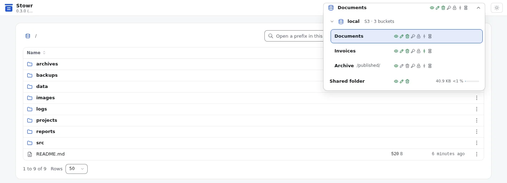
One page for the storage that you have
Stowr shows the objects of many buckets, previews them and works on them. It runs on a host with little memory.
One page for each storage
Browse AWS S3, MinIO, SeaweedFS, Garage, Google Cloud Storage and folders of the server. One menu lists them all, with the state of each bucket.
Bounded and stateless
Stowr reads exact byte ranges. It has no database, no cache folder and no temporary file. Each limit has a key in the file.
Access with ProcurAuth
In the mode authzen, Stowr checks an identity token and asks a PDP before each operation. A grant on a folder covers the folders below it.
How it works
Stowr is one static binary. The interface is inside. The access guard asks the PDP before each operation.
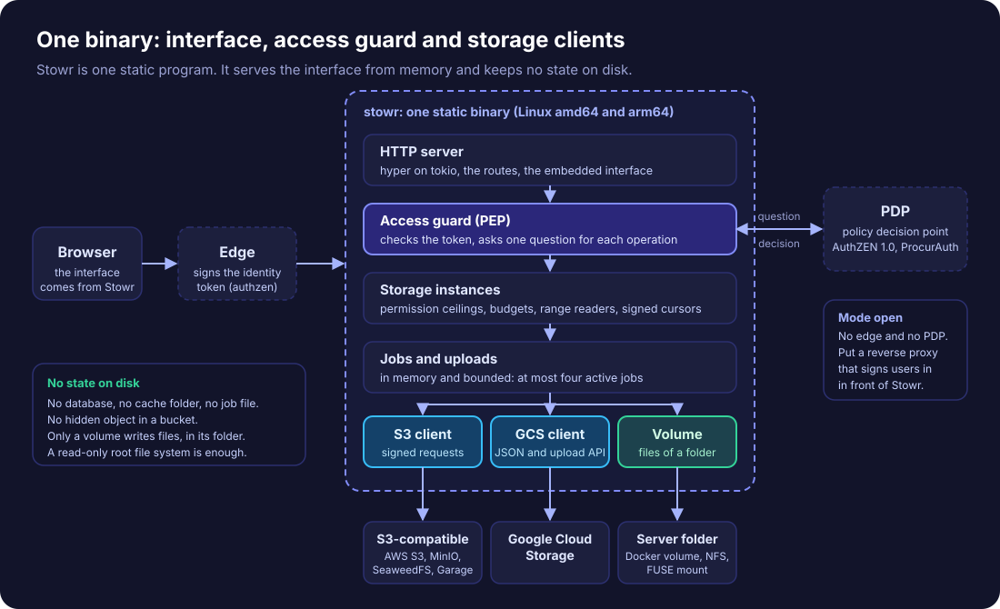
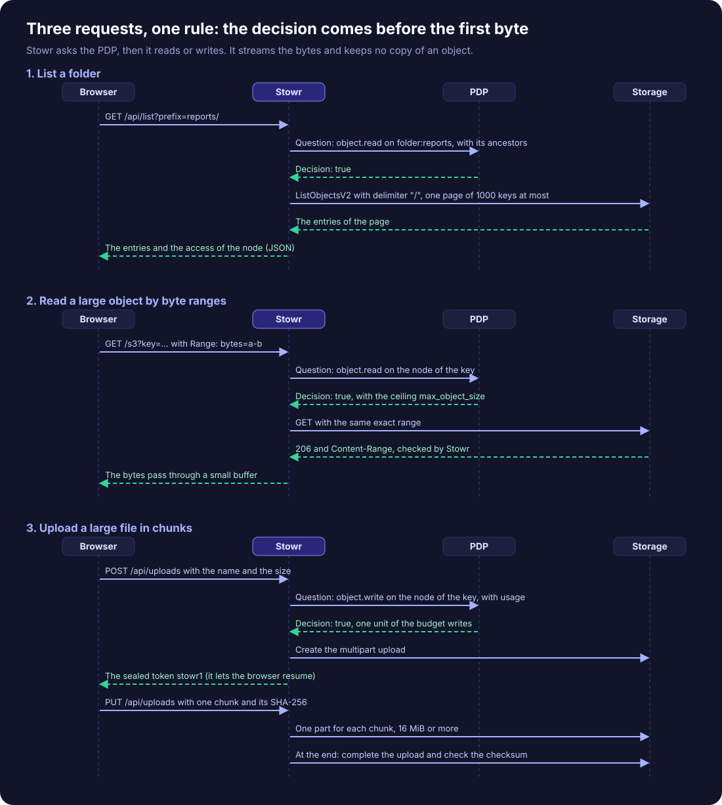
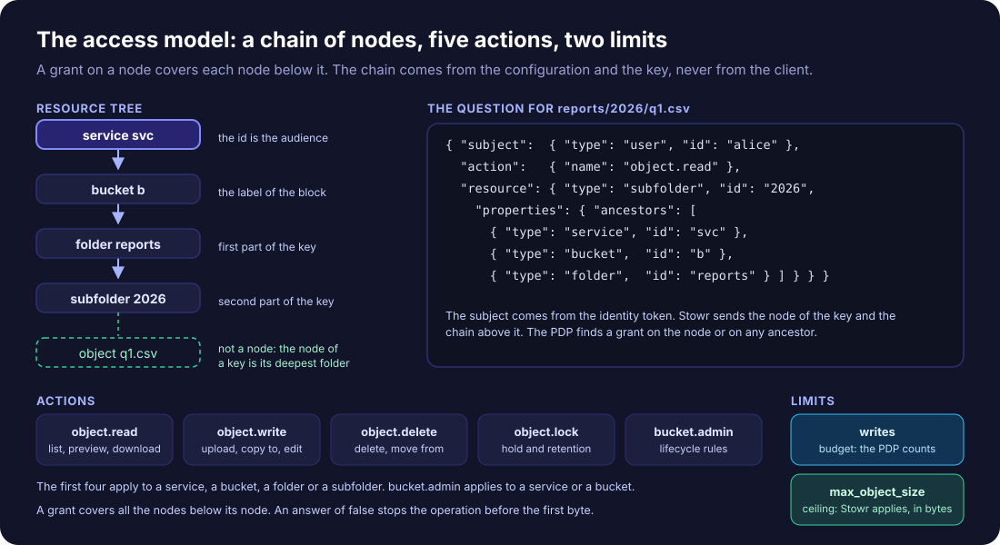
See it
Each picture comes from a live copy of the product, with demo data. Nothing is mocked.
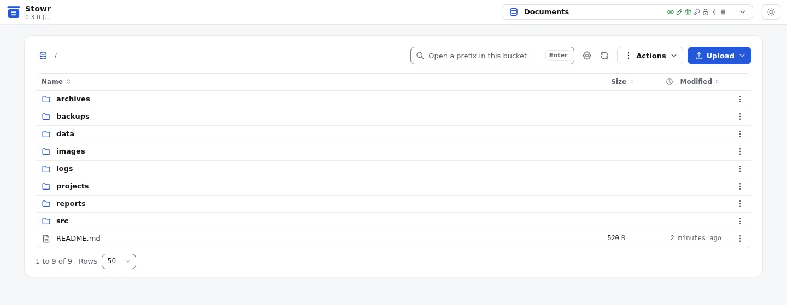
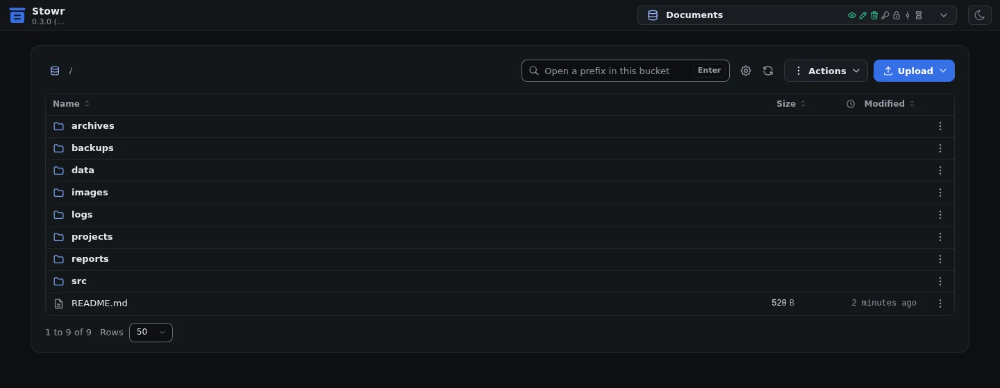
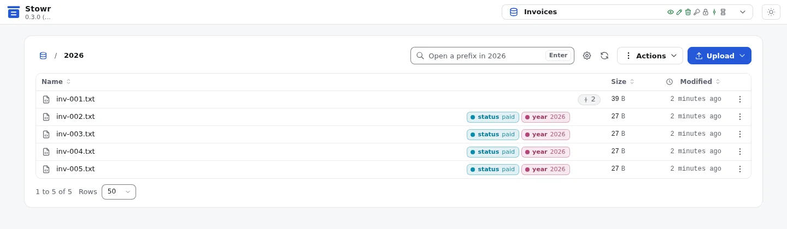
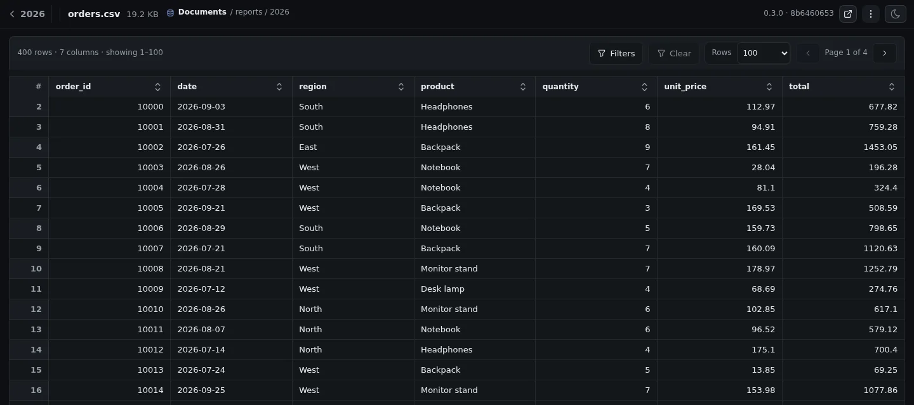
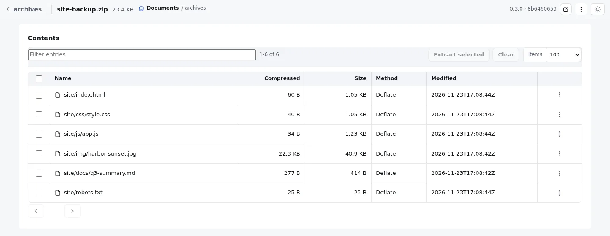
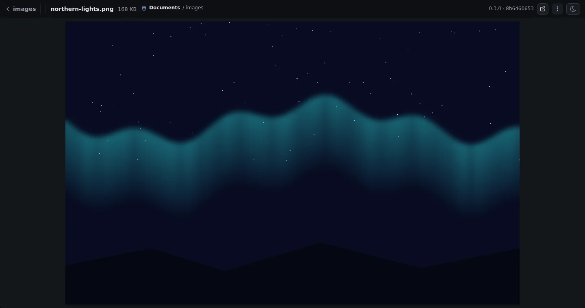
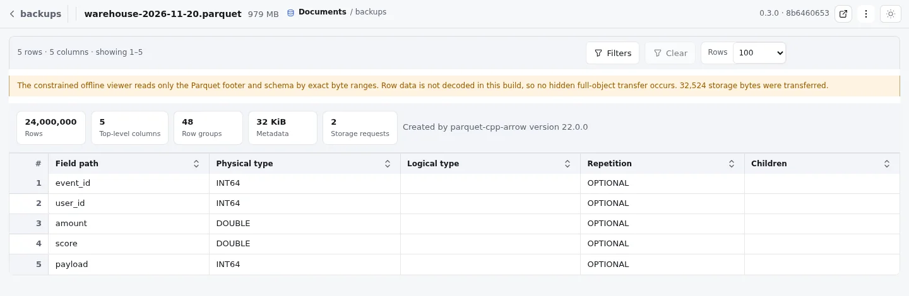
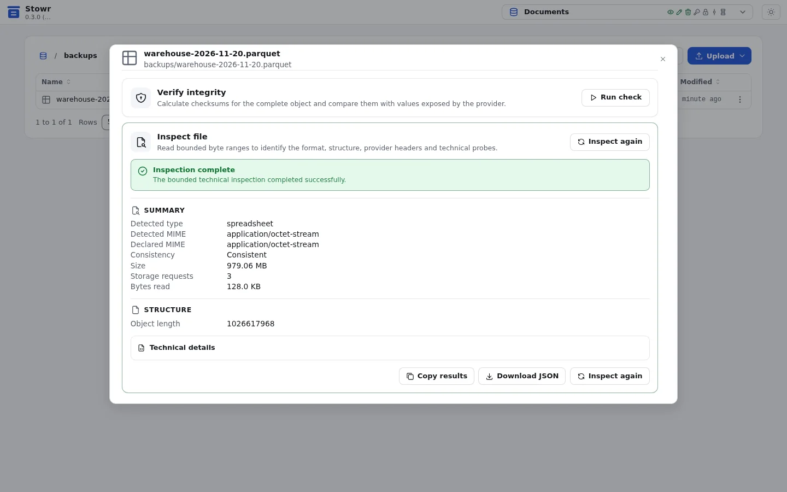
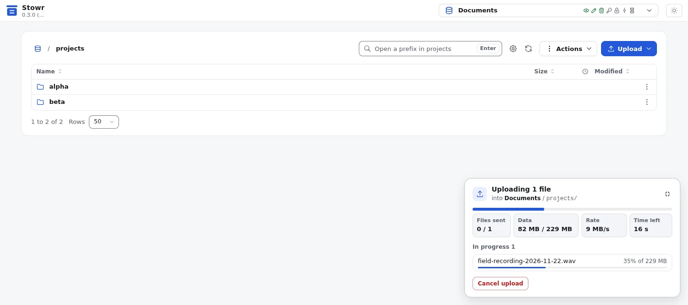
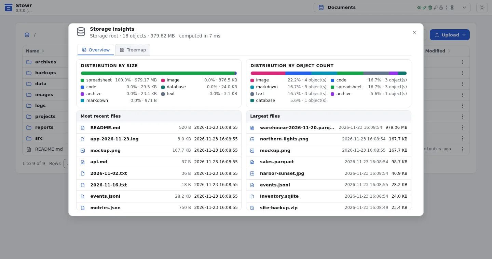
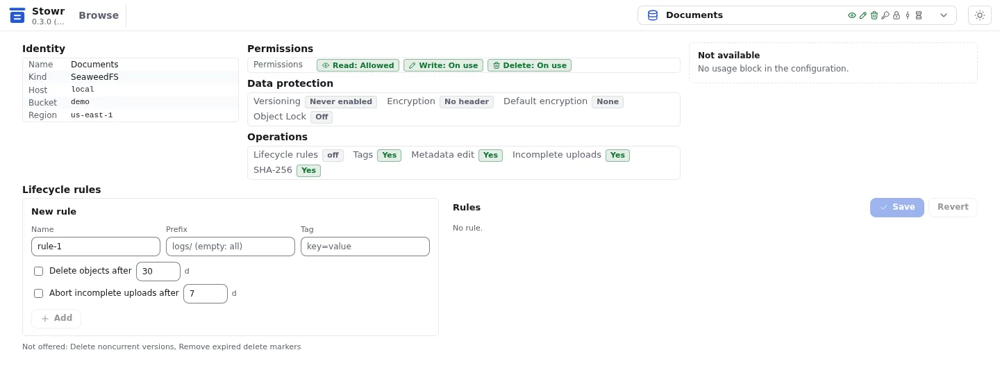
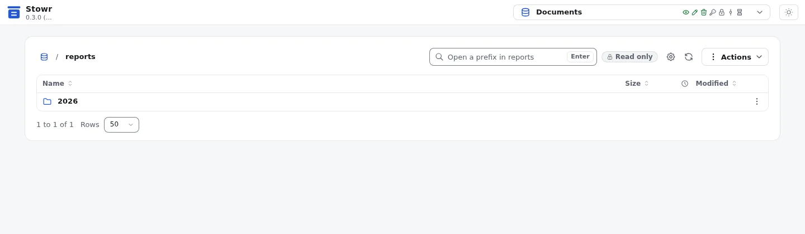
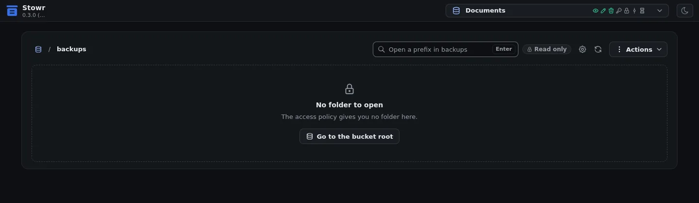
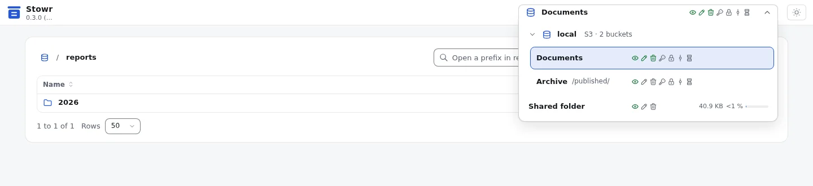
What Stowr does
| Area | What Stowr does |
|---|---|
| Storage | AWS S3, MinIO, SeaweedFS and Garage through the S3 API. Google Cloud Storage. Folders of the server as volumes. |
| Browsing | Dense tables, folders, search, sort, tags, version counts and the settings of the columns. |
| Previews | Text, code, Markdown, JSON, CSV, Parquet, SQLite, Excel, Word, PDF, images, audio, video, archives, certificates and email. |
| Large objects | Exact byte-range readers, an integrity check that hashes the stream, an inspection of the structure, and Insights on a folder. |
| Operations | Resumable upload with SHA-256 checksums, copy in parts, archive download and extraction, and edit of metadata and tags. |
| Versions | Versions of an object, restore, permanent delete, and the comparison of two versions in the browser. |
| Bucket functions | Lifecycle rules, Object Lock, SSE-S3 encryption, incomplete multipart uploads, and the usage and quota of a bucket. |
| Access | The mode authzen checks an identity token and asks a PDP. The mode open needs a proxy that signs users in. |
| Configuration | One HCL file with a closed schema. A mistake stops the start. The command print-config shows each value and its source. |
| Runtime | A read-only root file system is enough. No request goes to another origin. The binary is static, for Linux amd64 and arm64. |
Run it in five minutes
This test starts a local S3-compatible service in Docker, on 127.0.0.1. It needs a file config.hcl: the guide has it, with each step.
docker run -d --rm --name stowr-demo-s3 -p 127.0.0.1:8333:8333 chrislusf/seaweedfs:4.41 server -s3 -dir=/data \
-master.volumeSizeLimitMB=64 -volume.max=30 -volume.minFreeSpace=1GiB
sleep 10
curl -s -X PUT http://127.0.0.1:8333/demo
printf '# Hello\n\nThis file is in the bucket demo.\n' | curl -s --retry 5 --retry-delay 2 --retry-all-errors \
-X PUT -H 'Content-Type: text/markdown' --data-binary @- http://127.0.0.1:8333/demo/notes/hello.md
curl -fsSLO https://github.com/ProcurAuth/stowr/releases/download/v0.3.1/stowr_0.3.1_linux_amd64.tar.gz
tar -xzf stowr_0.3.1_linux_amd64.tar.gz
./stowr -c config.hclPart of ProcurAuth
Stowr is a PEP of the ProcurAuth specification. The portal gives it identity tokens and decisions.

- ProcurAuth: the open specification, the tools and the conformance cases.
- portal: the backend, the edge and the PDP.
- Hune: dashboards over ClickHouse, PostgreSQL and MongoDB.
- ClickHouse Dash: a query console with MCP.